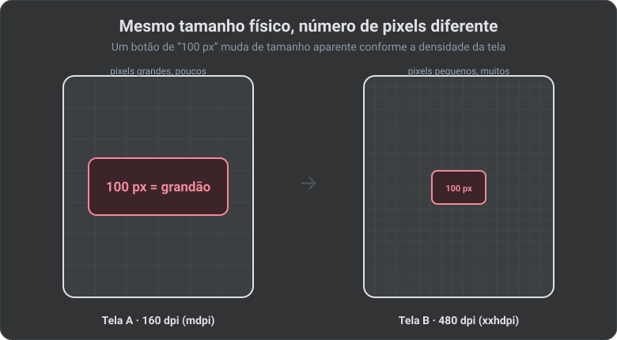
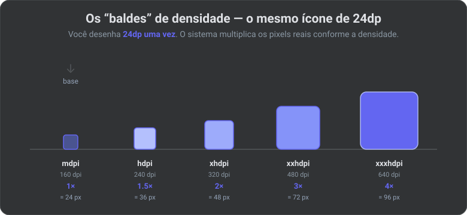
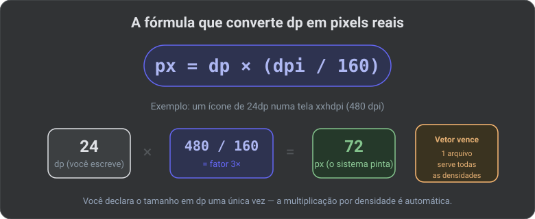
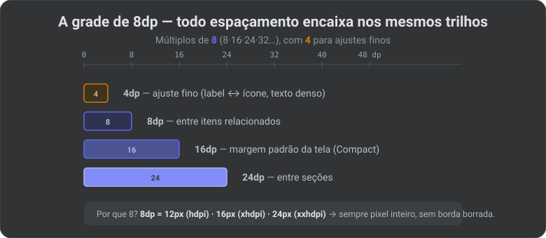
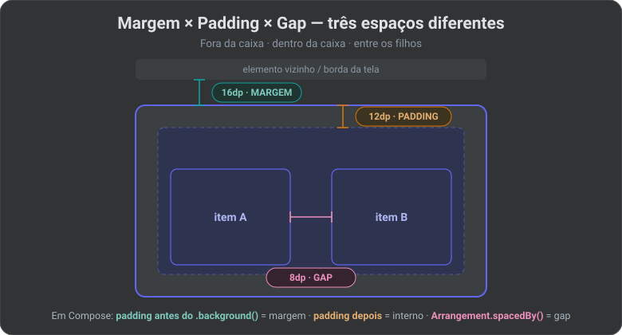
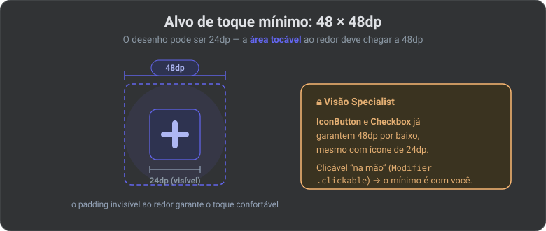
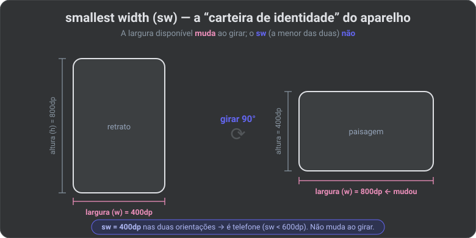
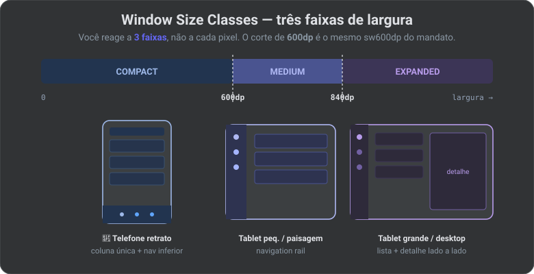

📏 Densidade, dp e Tamanhos de Tela: O Guia Adaptável (2026)
O artigo anterior mostrou o mandato: a Google te obriga a ser adaptável — não pode travar orientação em tela grande, e o conteúdo desenha edge-to-edge. Este artigo é o "como": entender densidade de pixel, dp, sw600dp e as size classes, e saber quando e como criar layouts variantes que ficam bons do celular ao tablet.
🔗 Fio condutor: o número mágico 600dp que apareceu como fronteira do mandato ("telas ≥ 600dp giram obrigatoriamente") é o mesmo que você vai usar aqui para decidir o layout. Entender de onde ele vem é o objetivo.
Por que dp existe: o problema que ele resolve
Duas telas podem ter o mesmo tamanho físico (em cm) mas números de pixels muito diferentes. Se você medisse tudo em pixels, um botão de "100px" seria enorme numa tela antiga e minúsculo num celular moderno.

A solução do Android é uma unidade abstrata que sempre resulta no mesmo tamanho físico: o dp.
🧠 Termo —
dp(density-independent pixel): a unidade de layout do Android. 1dp= 1 pixel numa tela de 160 dpi (a densidade "base"). Em telas mais densas, o sistema multiplica os pixels sozinho para manter o tamanho físico. Você projeta emdpe esquece os pixels reais.
🧠 Termo —
sp(scale-independent pixel): igual aodp, mas para textos. A diferença: osptambém respeita o ajuste de fonte que o usuário escolheu nas configurações de acessibilidade. Regra: fonte emsp, todo o resto emdp.
🧠 Termo —
px(pixel): o ponto físico da tela. Você quase nunca usapxdiretamente — só em casos raríssimos (ex.: desenhar 1 linha de exatamente 1 pixel).
A matemática da densidade (dpi)
dpi (dots per inch / pontos por polegada) mede quantos pixels cabem em uma polegada da tela. O Android agrupa os aparelhos em "baldes" de densidade:

| Balde | Densidade | Fator | 1 dp vale |
|---|---|---|---|
mdpi |
~160 dpi | 1× (base) | 1 px |
hdpi |
~240 dpi | 1.5× | 1.5 px |
xhdpi |
~320 dpi | 2× | 2 px |
xxhdpi |
~480 dpi | 3× | 3 px |
xxxhdpi |
~640 dpi | 4× | 4 px |
A fórmula (guarde):

Exemplo: um ícone de 24dp numa tela xxhdpi (480 dpi) ocupa 24 × (480/160) = 24 × 3 = 72 px reais. Você escreveu 24dp uma vez; o sistema resolveu o resto.
🔒 Visão Specialist: por isso imagens vetoriais (
VectorDrawable) vencem bitmaps. Um vetor é redesenhado nitidamente em qualquer densidade a partir de um arquivo só. Um PNG precisaria de 5 cópias (drawable-mdpi/,-hdpi/, …) e ainda pode sair borrado. Use vetor sempre que possível; guarde PNG só para fotos.
Espaçamento, margens e padding: o sistema de 8dp
Densidade garante que 16dp tem o mesmo tamanho físico em qualquer tela. Mas quais números usar? A resposta profissional não é "chutar" — é seguir uma grade (grid). O padrão do Material Design é a grade de 8dp: todo espaçamento é múltiplo de 8 (8, 16, 24, 32, 48…), com 4dp para ajustes finos (ícones, textos densos).

🧠 Por que 8? Como as densidades são múltiplos limpos de 160dpi (1×, 1.5×, 2×, 3×, 4×), múltiplos de 8dp caem em números inteiros de pixel em quase todos os baldes (8dp = 12px no hdpi, 16px no xhdpi, 24px no xxhdpi…). Isso evita bordas "meio pixel" borradas. A grade não é estética — é técnica.
Margem × Padding × Gap (a confusão clássica)
São três coisas diferentes. Errar isso é a origem de metade dos layouts "espremidos":

| Conceito | O que é | Em Compose |
|---|---|---|
| Margem | Espaço por fora da caixa (afasta dos vizinhos) | Modifier.padding(...) aplicado antes do fundo |
| Padding | Espaço por dentro (afasta o conteúdo da borda) | Modifier.padding(...) aplicado depois do fundo |
| Gap / spacing | Espaço entre filhos de uma lista/linha | Arrangement.spacedBy(8.dp) |
⚠️ Pegadinha do Compose: não existe "margin" separado de "padding" — os dois são
Modifier.padding. A ordem importa:paddingantes de.background()vira margem (fundo não pinta ali);paddingdepois vira padding interno (fundo pinta atrás do respiro).Modifier .padding(16.dp) // ← MARGEM: fica fora do fundo .background(Blue) .padding(12.dp) // ← PADDING: fica dentro do fundo
Alvo de toque: o mínimo de 48dp
Espaçamento não é só estética — é acessibilidade. Todo elemento tocável (botão, ícone clicável) deve ter no mínimo 48×48dp de área de toque, mesmo que o desenho seja menor.

🔒 Visão Specialist:
IconButtoneCheckboxdo Material já garantem 48dp por baixo, mesmo com ícone de 24dp. Se você fizer um clicável "na mão" (Modifier.clickable), você é responsável por dar o tamanho mínimo — senão o Lint acusa e o app fica difícil de tocar.
Espaçamento que escala com a tela
Aqui a densidade encontra o tamanho de tela: a margem da tela cresce em telas maiores (mais respiro), e isso liga direto com as size classes e o edge-to-edge:
| Size class | Margem lateral típica |
|---|---|
| Compact (telefone) | 16dp |
| Medium / Expanded (tablet) | 24dp+ |
No mundo de recursos, isso é um values-sw600dp/dimens.xml (visto adiante). Em Compose, é um valor escolhido pela size class. E há um caso especial ligado ao edge-to-edge: em listas roláveis, você quer o fundo indo até a borda, mas os itens afastados das barras — isso é contentPadding, não padding:
LazyColumn(
contentPadding = WindowInsets.safeDrawing.asPaddingValues(), // itens afastados
verticalArrangement = Arrangement.spacedBy(8.dp) // gap entre itens
) { /* ... */ }
// o fundo da lista continua indo edge-to-edge; só o conteúdo respeita os insets
🧠 Termo — tokens de espaçamento: em vez de espalhar
16.dppelo código, times sérios definem uma escala nomeada (Spacing.small = 8.dp,Spacing.medium = 16.dp,Spacing.large = 24.dp) num arquivo só. Mudou o respiro do app? Um lugar. Nunca use "número mágico" solto — use o token.
Tamanho de tela: sw, w e h
Densidade é sobre nitidez. Tamanho é sobre espaço — e o espaço também se mede em dp (não em pixels). Há três medidas, e confundi-las é erro clássico:

| Medida | Qualificador | Muda ao girar? | Para quê serve |
|---|---|---|---|
| Smallest width | sw<N>dp |
❌ Não — é fixa do aparelho | Classificar o tipo de aparelho (é tablet?) |
| Available width | w<N>dp |
✅ Sim | Decidir layout na orientação atual |
| Available height | h<N>dp |
✅ Sim | Layouts sensíveis à altura (raro) |
🧠 Termo — smallest width (
sw): a menor das duas dimensões da tela, emdp, sempre a mesma independente de girar. É a "carteira de identidade" do aparelho: um telefone típico temsw~360dp; um tablet de 7", ~600dp; um de 10", ~800dp. Por issosw600dp= "isto é uma tela grande" — e é exatamente o corte do mandato de orientação.
Os breakpoints oficiais: Window Size Classes
Você não precisa decorar dezenas de tamanhos. A Google padronizou faixas (breakpoints) baseadas na largura disponível — as Window Size Classes:

| Size Class (largura) | Faixa | Aparelho típico | Layout sugerido |
|---|---|---|---|
| Compact | < 600dp | Telefone em retrato | Coluna única, navegação inferior |
| Medium | 600–839dp | Telefone em paisagem, tablet pequeno, dobrável | Navigation rail, talvez 2 colunas |
| Expanded | ≥ 840dp | Tablet grande, dobrável aberto, desktop | Lista + detalhe lado a lado, rail/drawer |
🧠 Termo — breakpoint: um ponto de largura onde o layout muda de forma. Em vez de reagir a cada pixel, você reage a três faixas. Simples e cobre o mundo real. (O Material 3 recente ainda acrescenta
Large≥1200dp eExtra-Large≥1600dp para desktop, mas Compact/Medium/Expanded resolvem a maioria dos apps.)
🔗 Ligação com o mandato: o corte de 600dp (Compact→Medium) é o mesmo
sw600dpdo artigo anterior. Ou seja: a fronteira em que a Google te obriga a girar é a fronteira em que você quer trocar o layout. Os dois assuntos são o mesmo assunto.
Como criar layouts variantes: os dois mundos
Existem duas formas de variar o layout, e elas convivem. Saber qual usar é metade da batalha.
Mundo 1 — Resource Qualifiers (recursos / XML)
O Android escolhe automaticamente a pasta certa conforme o aparelho. Você cria pastas com sufixos (qualificadores) e o sistema resolve em runtime:
res/
├── drawable/ ← vetores (servem para TODAS as densidades)
├── drawable-xxhdpi/ ← PNGs específicos de densidade (se precisar)
├── values/
│ └── dimens.xml ← <dimen name="margin">16dp</dimen> (padrão)
├── values-sw600dp/
│ └── dimens.xml ← <dimen name="margin">24dp</dimen> (tablet: mais respiro)
├── layout/
│ └── activity_main.xml ← layout do telefone
└── layout-w840dp/
└── activity_main.xml ← layout de duas colunas (tela larga)
| Qualificador | Quando o sistema usa | Uso típico |
|---|---|---|
-mdpi, -hdpi, -xhdpi… |
Pela densidade da tela | Bitmaps (PNG) por densidade |
-sw600dp |
sw do aparelho ≥ 600dp |
dimens/valores para tablet (fixo, não muda ao girar) |
-w840dp |
Largura atual ≥ 840dp | Layouts diferentes por espaço disponível |
-land / -port |
Orientação atual | Ajustes de paisagem/retrato |
-night |
Modo escuro ligado | Cores do tema escuro |
⚠️ Cuidado com
-land/-portpara layout inteiro: dobrar o número de XMLs por orientação é uma armadilha de manutenção. Prefira variar por largura (-w<N>dp), que descreve o que realmente importa (espaço), não a orientação.
🧠 Como o sistema "decide": ele pega a configuração atual do aparelho (densidade,
sw, largura, orientação, tema) e escolhe a pasta mais específica que combina. Se nenhuma variante combinar, cai na pasta base (values/,layout/).
Mundo 2 — Jetpack Compose (o jeito moderno, o do NexusHub)
Em Compose você não cria pastas layout-w840dp/. A decisão é código, em runtime, com as size classes:
val sizeClass = calculateWindowSizeClass(activity)
when (sizeClass.widthSizeClass) {
WindowWidthSizeClass.Compact -> {
FeedList() // 📱 telefone: só a lista
}
WindowWidthSizeClass.Medium,
WindowWidthSizeClass.Expanded -> {
Row {
FeedList(Modifier.weight(1f)) // 💻 tablet: lista +
ArticleDetail(Modifier.weight(2f))// detalhe lado a lado
}
}
}
Para reagir ao espaço de um componente específico (não da janela toda), use BoxWithConstraints:
BoxWithConstraints {
if (maxWidth < 600.dp) CompactCard() else WideCard()
}
E o Material 3 já traz scaffolds adaptáveis prontos, que fazem a troca sozinhos:
| Componente | O que faz sozinho |
|---|---|
NavigationSuiteScaffold |
Troca barra inferior (Compact) ↔ navigation rail (Medium/Expanded) |
ListDetailPaneScaffold |
Lista em tela cheia (Compact) ↔ lista + detalhe (Expanded) |
SupportingPaneScaffold |
Conteúdo principal + painel de apoio quando há espaço |
🔒 Visão Specialist — qual mundo usar: em Compose, use size classes/
BoxWithConstraintspara layout, e ainda use resource qualifiers para recursos que não são código:values-sw600dp/dimens.xml(espaçamentos),drawable/vetorial,values-night/(tema). Layout = código; valores e assets = recursos.
Quando (não) criar uma variante
O erro do iniciante é criar variante demais. A régua:
O conteúdo cabe e fica bom só esticando? ──► NÃO crie variante.
│ não (deixe o Compose refluir)
▼
Sobra espaço para mostrar MAIS de uma vez? ──► SIM: lista + detalhe,
│ não duas colunas, rail lateral.
▼
O toque/leitura fica ruim numa faixa? ──► Ajuste dimens via
values-sw600dp (respiro).
- Compact → Medium/Expanded: o salto que quase todo app precisa é um só: de "uma coluna" para "lista + detalhe". Esse é o
ListDetailPaneScaffold. - Não faça layout para "telefone virado", "tablet 7", "tablet 10" separados. Pense em faixas de largura, não em modelos.
🔒 Visão Specialist: o layout responsivo bem-feito tem poucos pontos de quebra e muito conteúdo que simplesmente reflui. Se você tem 6 XMLs para a mesma tela, o problema é design, não Android.
✅ Checklist para o NexusHub
| Item | Ação |
|---|---|
Toda medida de layout em dp, fonte em sp |
Padrão desde a 1ª tela |
| Espaçamentos na grade de 8dp (tokens nomeados) | Nada de número mágico solto |
| Clicáveis com ≥ 48dp de área de toque | Usar IconButton; conferir os "na mão" |
Ícones como VectorDrawable, não PNG multi-densidade |
Evita drawable-xxhdpi/ etc. |
values-sw600dp/dimens.xml para respiro em tablet |
Margens/paddings maiores |
Feed: Compact = lista; Expanded = lista + detalhe |
Usar ListDetailPaneScaffold |
Navegação: NavigationSuiteScaffold |
Barra inferior ↔ rail automático |
Testar num AVD tablet (sw ≥ 600dp) além do Pixel_9a |
Ver o layout expandido de verdade |
| Não travar orientação (mandato) | Deixar refluir — ver artigo anterior |
📖 Glossário-relâmpago
| Termo | Em uma linha |
|---|---|
dp |
Unidade de layout independente da densidade (1dp = 1px em 160dpi). |
sp |
Como o dp, mas para fontes — respeita o ajuste do usuário. |
px |
Pixel físico — quase nunca usado direto. |
| Grade de 8dp | Espaçamentos em múltiplos de 8 (4 p/ ajuste fino). |
| Margem / Padding / Gap | Fora da caixa / dentro da caixa / entre filhos. |
| Alvo de toque | Área clicável mínima de 48×48dp (acessibilidade). |
contentPadding |
Padding dos itens de uma lista sem cortar o fundo (edge-to-edge). |
| Token de espaçamento | Valor nomeado (Spacing.medium) em vez de número mágico. |
| dpi | Pixels por polegada; define o "balde" de densidade. |
| Balde de densidade | mdpi/hdpi/xhdpi/xxhdpi/xxxhdpi (1×…4×). |
smallest width (sw) |
Menor dimensão da tela em dp; não muda ao girar. |
available width (w) |
Largura atual em dp; muda ao girar. |
| Resource qualifier | Sufixo de pasta (-sw600dp, -night) que o sistema escolhe sozinho. |
| Window Size Class | Compact/Medium/Expanded — as faixas de largura oficiais. |
| Breakpoint | Ponto de largura (600/840dp) onde o layout muda de forma. |
| VectorDrawable | Imagem vetorial que serve a todas as densidades num arquivo. |
Trilogia + adaptável do NexusHub: Gradle · Android SDK · Edge-to-Edge & Telas Grandes · este artigo.